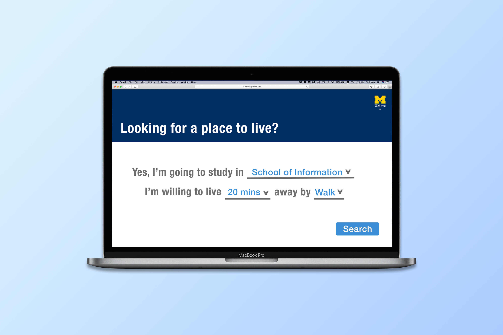

Overview
Housing is always a major problem for the international students. In this project, I explore the obstacles these students are facing, and and ways to tackle these challenges with design solutions.
Problem to Solve
Studies shows that the satisfaction of housing may influence students’ academic and social development, especially in the first two years. There are more than 7,000 international students currently study in Ann Arbor. However, most of them have obstacles looking for a place to live.
In my research process, I drew the attention on Ann Arbor, which is a classic college town which ranked 4 for the popularity of the international students in the states.
Project Timeline
Competitor Analysis
- UM Housing site
UM’s official housing site provides information about on-campus housing and a platform for landlords and the students to pair. It includes structured housing and multi-choice traffic information, but do not optimize information for international students.
- MTSA life database
A wiki-like database constructed by Michigan Taiwanese Student Association (MTSA). Provides comprehensive information needed for Taiwanese students to live in Ann Arbor. The contents are maintained by a few students. Provide cultural information and few housing experiences. However, the quantity of experiences provided stays low, and the information provided isn’t updated.
- UMICH Housing, Rooms, Apartments, Sublets
Students of UM formed a Facebook group as a platform to share housing information. Also, provide the landlords a place to seek for tenants. Communications through Facebook are more convenient than E-mail. However, it still cannot solve the problem of the cultural problems.
- Apartment List
Apartment List is a web-based apartment pairing system. Users provide needs and preferences, and the system provides filtered housing information for the users. The results are highly related to the users’ needs, but cannot help with more complicated tasks like cultural and geographical problems.
Sketch

Persona

Shiao-Ming Wang
Taiwan
22 years old
undergraduate
- Motivation:
- He’s going to move to Ann Arbor in months
- He’s looking forward for new life in the States
- He’s an out-going person who love to know more people
- Goals:
- To find a place to live with reasonable costs
- To learn more details about the Ann Arbor and the campus
- Frustrations:
- The weather is so differed between his hometown and Ann Arbor
- He has limited experience communicating in English
- He hasn’t had any experience lives in a relatively small city
- He doesn’t have any experience renting a house/apartment
Paper Prototype
To be continued...
My Role
UX Researcher
UX Designer
UI Designer
Research
Literature Review | Competitor Analysis | Interview
Design
Story Board | Persona | Prototyping
Duration
4 months (Sep. - Dec. 2019)